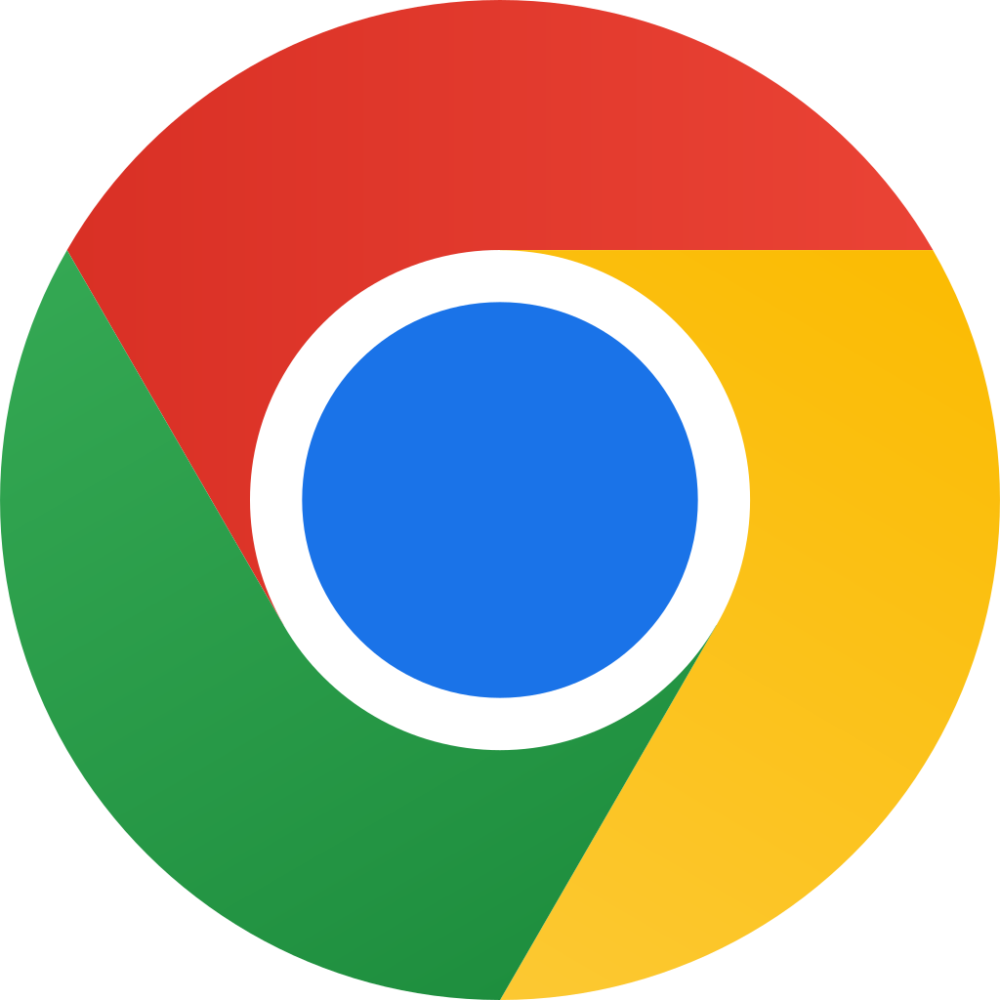

Mozilla FireFox
El proyecto Mozilla fue creado en 1998 con la liberación del código fuente de la suite del navegador Netscape. La intención era aprovechar el poder creativo de miles de programadores en Internet e impulsar niveles de innovación sin precedentes en el mercado de los navegadores.
ver mas

Google chrome
En 2008, Google lanzó Chrome , el primer navegador con pestañas aisladas, lo que significaba que cuando una pestaña fallaba, las demás pestañas y todo el navegador seguían funcionando. En 2013, Chrome se había convertido en el navegador dominante, superando a Internet Explorer y Firefox en popularidad.
ver mas

Brave browser
Brave es un navegador de código abierto que lanzó su primera versión en enero de 2016 de la mano de Brave Software, una empresa cofundada por dos personas destacadas en el mundo de la tecnología: Eich, reconocido por ser el creador de JavaScript y cofundador de Mozilla, y Bondy
ver mas
Microsoft edge
Microsoft Edge es un navegador web desarrollado por la empresa Microsoft. Fue lanzado en 2015 para reemplazar a Internet Explorer. Desde entonces, ha evolucionado y mejorado para ofrecer una experiencia de navegación más rápida, segura y eficiente.
ver mas
Opera browser
Opera. La empresa noruega Opera Software creó este navegador en 1994. Su uso es gratuito desde el lanzamiento de su versión 8.50. Ha sido reconocido por su velocidad, seguridad y estandarización, y además cuenta con un lenguaje internacional en constante evolución.
ver mas